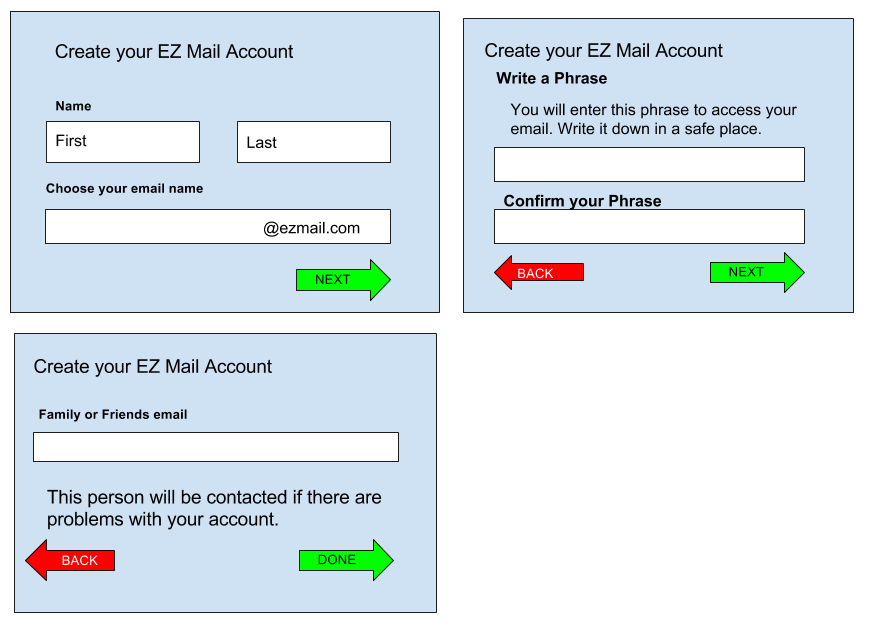
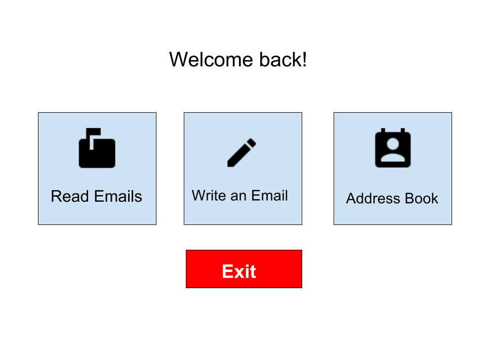
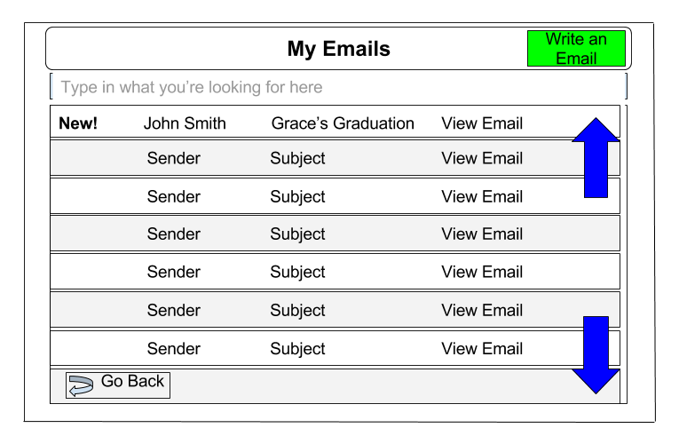
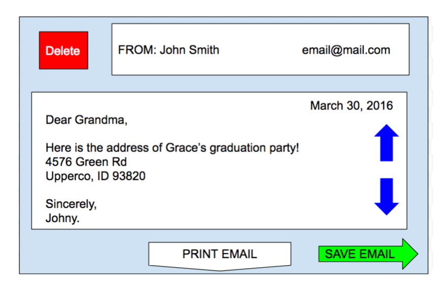
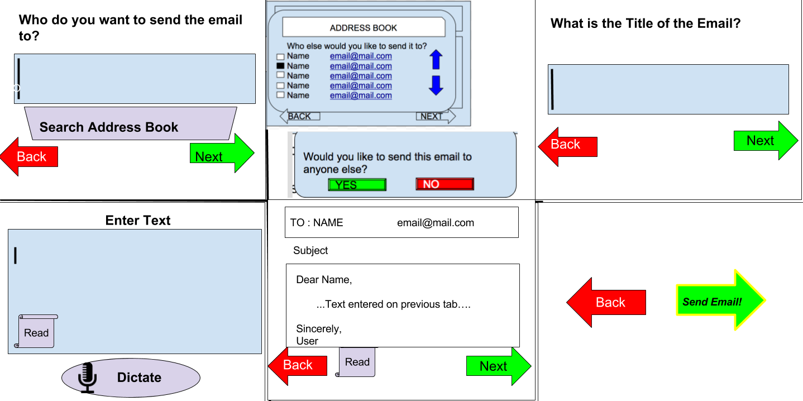
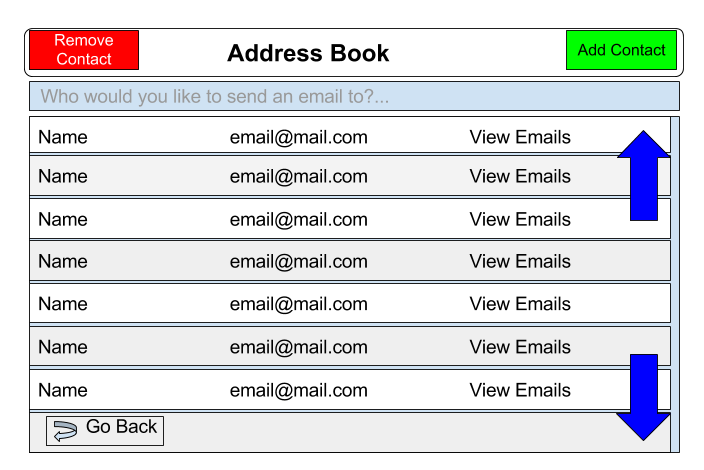

It's important that our users have an helper with them when first setting up their account. Because our users are unlikely to have a backup email address, this helper will be contacted if the account is compromised or the password is forgotten. We encourage a catch phrase as the password because EZ Mail believes that it is easier to recall a password that way.

We strived to go for simplicity when creating the home screen. Realizing our target audience, we wanted the easiest accessibility of the key features found in email communication.

We really wanted to stick with a consistent color scheme in relation to our email platform. We found the colors red, green and blue. Green acts as positive action like the term “Green means Go” while red acts as a negative action like the term “Red means Stop”. Since our main user base has a tough time learning new tasks we wanted to familiarize them with actions they’ve known for several years previously.

When email is received this is how it is viewed. With the arrows, it allows you to scroll down the email. Also below the email it gives you option the presented in different colors whether, you want to trash the email, print the email, or save the email.

We wanted to make an easy way to know how to write an email. It directs on what to do and how to do it. After each step you click the next button and if the person wants to change something, they just click the back button.

The address book acts as a contact book for our user’s friends on the web. All of their contacts can be easily accessed here with the help of the blue arrows positioned on the right side of the page.